Active Reader
My Role
I started out at Tall Chair using the Active Reader Tool. I became the User Experience Designer and UI / Tools Programmer for the Active Reader Tool built in Unity3D. The experience I had using the tool helped me in this new role quite a bit.
User Research & Usability Testing
The main people using the Active Reader tool were my co-workers. That made it easier to borrow their time to ask them what they wanted to change about the tool. I also watched each one for a time while they used the tool. I noticed they weren't actually using a lot of the tool that was implemented. I also noticed that the majority of what they used was only a small portion of the tool. The main problem area was the Chapter Flow.
Chapter Flow
To start a Chapter is a collection of Pages. These naming conventions come from the main use of the tool as an interactive book authoring system. The Chapter Flow maintains all of the information for the current project. You could potentially have many "Chapters" for each "Book"(app).
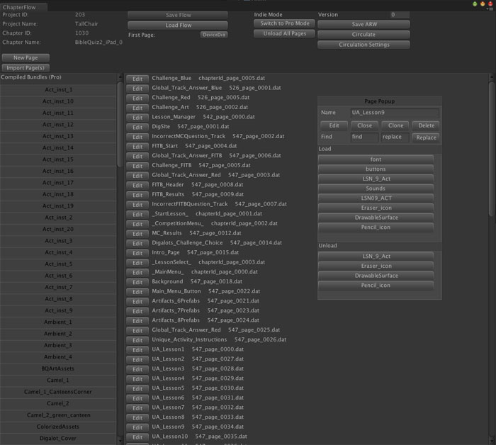
This is how the Chapter Flow started when I out. It was huge and cumbersome. It was functional but a little unwieldy. My task was to make this more useable.
The Breakdown
The Chapter Flow window maintained a multitude of functions. These are the main functions of the window:
- Saving & Loading of Chapter Flows
- Page Info
- First Page
- Bundle Loading Info
- Switching To & From Indie Mode
- Circulation Info
- Creating an ARW
By splitting these into separate modular compartments, they could be open only when needed and take up less space on screen. I will be talking about all of these parts and how I dealt with each one in the following sections in the same order as the list above.
Saving & Loading
The Chapter Flow can already be loaded from the top menu. Since you can only have one Chapter Flow open at a time, loading from the Chapter Flow itself didn't make much sense.
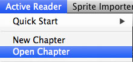
As for saving we can make things easier by making it automatically save itself after it changes in anyway. This removes the button and makes sure the user doesn't forget to save the changes.
Page Info
The most important task of the Chapter Flow is keeping track of the Page info. This functionality gets its own window which is called the Chapter Editor, since a Chapter is a collection of Pages.
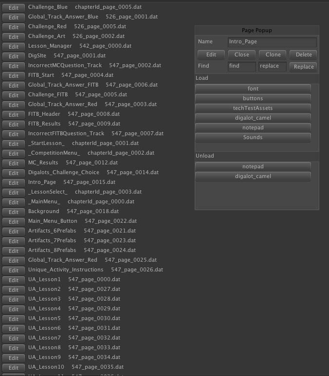
There were many issues with this version:
- It shows the unique id of the page. This doesn't make much sense to the artist. Only reason it is there is because the files match these.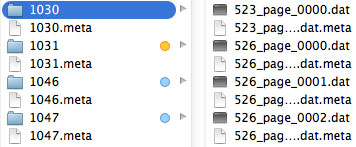
- The Page functions are all in the page pop up. To create a new file you need go all the way back over to the opposite side of the window.
- The two Edit buttons don't really make sense.
- The size of the window to fit these both is just huge!
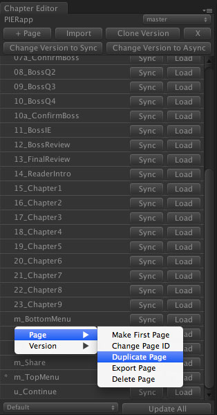
It has been stripped down to the basic needs. There are many changes here:
- No more unique id's here. As you can see the name of the page is now the unique id. You can't have two pages with the same name so why not use that to our advantage?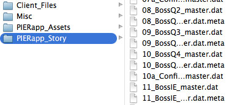
- The global chapter controlling functions are now at the top.
- The most useful functions per page are at the right of each page. When the page is loaded this changes contextually from Sync / Load to Save / Unload.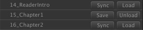
- More advanced functions for the page can be accessed through a right click context menu.
- Versions are a new concept added in that can be used to change how a page works under certain circumstances.
As you can see much of the functionality was ripped out, while others are put in based on need. This new design has cut the size down to about one third the size. Every thing visible is important and has its uses. The less important things are hidden in the context menus.
First Page
The first page is the page that loads on app start. In the original version this was shown in a popup selector. This wasn't a bad technique it just takes up room and didn't fit in with the new design.
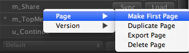
Now it is indicated by the astricks on the left and can be changed through the context menu.
Bundle Loading Info
This is the second most important task of the chapter flow. The user associates the asset bundles to each page. The Load section specifies which bundles to load when the page loads. The Unload section specifies which bundles to unload when the page is unloaded.
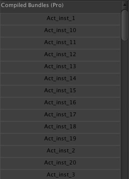
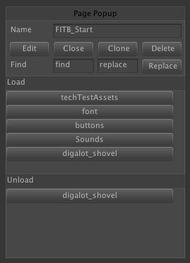
The bundle section takes up the entire left side of the window and the load and unload sections take up the right. However, this is rarely needed. The main use is when a page is initially setup. Putting this in its own window that can be hidden if the user doesn't want to waste screen space will help with that.

This modified version, now called the Bundle Editor, is similar but more compact. Here are the changes:
- Both of the other sections are here in this new window but they are placed next to each other.
- The pages are selected with a popup selector as well as which version you are modifying.
- You can now unload all currently loaded bundles.
Switching To & From Indie
This toggle was moved into the Bundle Editor because it is only relevant to bundles since it is refering to indie bundles(file folders in Resources) and probundles(.unity3d compressed files). The wording was changed from 'Indie' to 'Raw' and 'Pro' to 'iOS' so that when Android and other bundles were introduced it would make more sense.
Circulation Info & Creating an ARW
These are both items that have been deprecated. Circulation would get its own window if it was re-implemented. Creating an ARW was replaced by a Flash builder, but has since been deprecated as well.
Conclusion
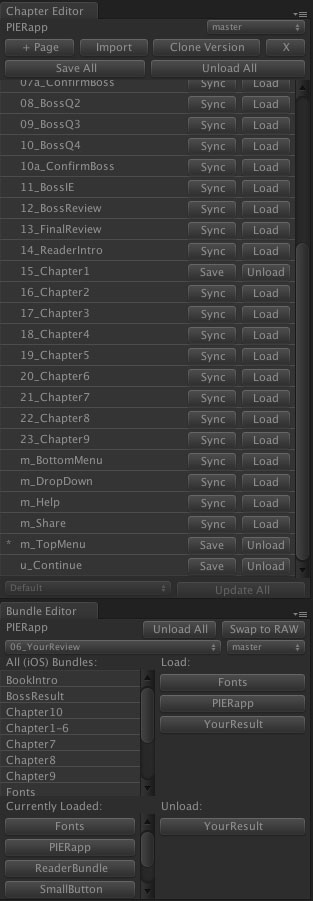
Even with both windows open they still only take up one third of space that the old version did. However you can potentially shrink down the windows and place them as tabs of each other to save even more space on the screen. That is something that you weren't able to do before.
The functionality is still all there with more added! Everything makes more sense and is more useful than before. Overall I felt the time it took to make this design a reality was worth it.